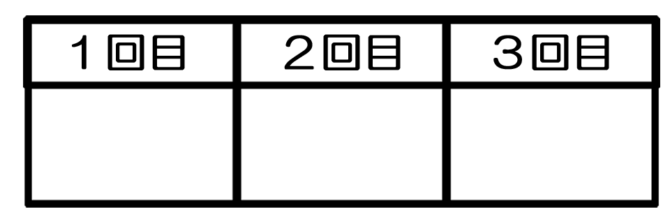

№70-① 日本銀行

区域変更情報（№70-① 日本銀行）
地図の修正点・訪問拒否の追加変更などがあれば、この部分に記入してください。
有効期限：2018/11/09(金)まで
地図返却先：ビジネス街フォルダ
今回貸出日：2018/10/05
前回使用：2018/03/16～2018/04/20(168～203日前/平均185日)
拒否
要確認
今回訪問
高松第一生命ビルディング新館
| 9F | 第一生命東四国支社 | | 9F | 第一生命労働組合四国支部 | | 8F | アサヒビール(株)四国統括本部 | | 8F | アサヒビール㈱高松支社 | | 7F | 訪問拒否：(株)トクヤマ 高松支店 | | 6F | 環境省 | | 6F | ㈱近宣 四国支店 | | 6F | ニッテレ債権回収㈱高松支店 | | 6F | (株)戸上電機製作所 四国支店 | | 6F | ノベルティファーマ(株) | | 5F | アサヒ飲料(株) 四国支社 | | 4F | (財)建設物価調査会 四国支部 | | 4F | セコムグループ | | 4F | (株)守谷商会 四国支社 | | 3F | セコム(株) 四国事業部 | | 3F | セコム(株) 高松(支) | | 3F | セコム損害保険㈱高松支店 | | 3F | 環境省四国環境パートナーシップ・オフィス | | 2F | 日本年金機構 | | 1F | セブンイレブン |
|
|
高松寿町プライムビル
| 9Ｆ | 原子燃料工業(株) 四国支店 | | 9F | カメイ(株) | | 9F | 武田薬品工業(株) | | 8F | 五洋建設(株) | | 8F | 吉田奏郎事務所 | | 8F | あゆみ製薬 | | 8F | 一般財団法人省エネセンター | | 8F | 東京トップツアーズ㈱ | | 7F | 日本事務器(株) | | 7F | 日本ポリエステル | | 7F | キョウエイアンドインターナショナル高松（営） | | 7F | 四国送電線建設協同組合 | | 6F | トーアエイヨー(株) | | 6F | (株)チノー 高松(営) | | 6F | 日本道路興軍(株) | | 6F | 正興電機製作所 | | 6F | (株)ビジネスコンサルタント | | 6F | 大有建設(株) | | 6F | 新日本石油(株) | | 5F | 訪問拒否：コスモ石油(株) 高松支店 | | 5F | 訪問拒否：(株)コスモトレードアンドサービス 高松支店 | | 5F | 訪問拒否：コスモ石油ルブリカンツ(株) | | 5F | アローズ法律事務所 | | 4F | (株)不動テトラ四国支店 | | 4F | 財団法人海洋架橋橋梁調査会 | | 3F | 住友大阪セメント(株) 四国支店 | | 3F | 北村製作所 | | 3F | 宮崎浩二法律事務所 | | 2F | (株)日立メディコ 四国支店 | | 2F | 加藤製作所 | | 2F | 中央不動産鑑定所 | | 2F | 佐久間一郎税理士事務所 | | 1F | レオパレス２１ |
|
|